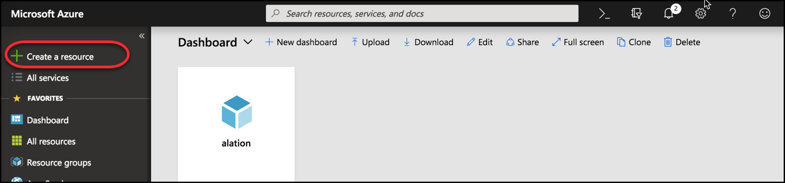
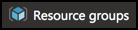
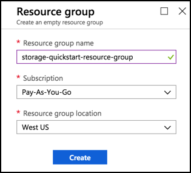
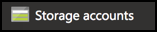
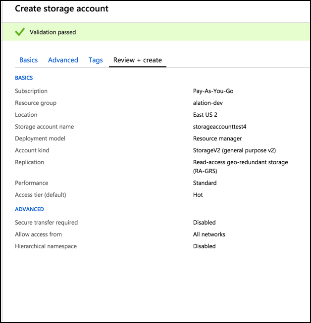
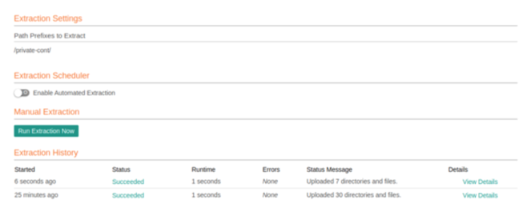

Azure Blob Storage¶
Available from Alation V R3 (5.6.0+)
Starting with version 5.6.0, Alation supports Azure Blob Storage as a file system.
Azure Blob storage is Microsoft’s object storage solution for the cloud. Blob storage is optimized for storing massive amounts of unstructured data such as text or binary data. Blob storage exposes three resources: the storage account, the containers in the account, and the blobs in a container.
Note
Alation currently uses Shared Key Authorization.
Configuration in Azure¶
Creating an Azure Blob Source¶
Use the Microsoft Azure portal to create an Azure Blob resource.
Log in to the Azure portal.
Click +Create a resource.

{kind=link}
4. In the search field of the main toolbar, enter Storage account - blob, file, table, queue. Click Storage account-blob, file, table, queue. The storage account page is displayed. Click Create.
{kind=link}
5. Create storage account screen appears.
{kind=link}
Under the Basics tab, enter information for the Project Details and Instance Details section.
Select Pay-As-You-Go under Subscription.
For an existing Resource group, select the appropriate group from the drop-down list.
If there is no Resource group, create a new group.
Note
Do not click Create new under Resource group on Create storage account screen to create a new resource group. This is an incorrect way to create a new resource group.
Creating a resource group¶
To create a resource group on the Azure portal, follow the steps as listed:
On the Azure portal, click Resource groups under Favorites on the left pane:
Click +Add.
Enter a unique name for the Resource group. A checkmark appears adjacent to the name of the resource group.
Select Pay-As-You-Go as the mode of subscription.
Select the appropriate Resource group location from the drop-down list. Example:
West USClick Create.

{kind=link}
{kind=link}
Creating a storage account¶
To create a storage account on the Azure portal, follow the steps as listed:
On the Azure portal, under Favorites on the left panel, click Storage Accounts:
Click +Add.
Create Storage account screen appears.
Under the Basics tab, enter information for the Project Details and Instance Details section.
Select Pay-As-You-Go under Subscription.
Choose the appropriate Resource group from the drop-down list. If there is no resource group, create a new resource group. For more information, see Creating a resource group section.
Enter a unique title for the Storage account name.
Select the appropriate Location from the drop-down list. Example:
East US 2Choose Standard for Performance.
Select Storage V2 (general purpose V2) option from the drop-down list for Account kind.
Select the appropriate Replication option from the list:
Locally-redundant storage (LRS)
Zone-redundant storage (ZRS)
Geo-redundant storage (GRS)
Read-access geo-redundant storage (RA-GRS).
The default Deployment Model is Resource manager.
Choose Hot as the option for Access tier (default).
Click Next:Advanced >
Choose Disabled as option for Secure transfer (required).
Choose All Networks option for Allow access from (VIRTUAL NETWORKS).
Click Review+create.

{kind=link}
{kind=link}
The details of the storage account:
{kind=link}
Access key information¶
Click the storage account that you have created. Click Access keys under Settings. Information pertinent to the key and account name is available.
{kind=link}
{kind=link}
{kind=link}
Authentication with Blob¶
The authentication with Blob can be either through the Shared Key or Shared Access Signature. To authenticate the blob using shared key authorization, the access key details and storage account name are required. To authenticate the blob using Shared Access Signature, the access key and shared access signature are required.
Configuration In Alation¶
Add a new file system through the Sources > Add a File System page.
Choose the type Azure Blob Storage
Enter the Storage Account Name, Shared Key or Shared access signature. Shared key is the access key of the storage account. Shared Access Signature is an account level shared access signature of the storage account. Select the checkbox Use Shared Access Signature if you want to use shared access signature.
Under Extraction Settings, enter the path prefixes indicating where Alation should start extraction.
Click Run Extraction Now. Wait for a few seconds. The status at the bottom of the page displays the extraction status. It may take some time for this message to be displayed.
{kind=link}
Troubleshooting¶
The job fails and shows an error message in the UI¶
If the extraction failed with an error, read the message and match it with the following categories.
Network Error¶
Confirm that the Alation server has access to the internet, so that it can reach Azure Blob.
FileSystem Extraction Error/Permission Exception¶
Confirm that you have entered the correct details for Shared Key. This may happen when you try to access a resource that is not exposed to the public.
The job works but no files were synced¶
Confirm that the Azure Blob setup works correctly. Check for error messages in /opt/alation/site/logs/taskserver.log.
Check the path prefix filters. If the authorization is a Shared Key, ensure that the resource you are trying to access exists or the Shared Key is entered correctly.
If you connect as public (without Shared Key), ensure that the resource you are trying to access is exposed to public.
If the resource you are trying to extract is present inside a container of access level : CONTAINER, then the path prefix may be a partial path of the blob resource but should have the whole container name.
If the resource you are trying to extract is present inside a container of access level : BLOB, then the path prefix should have the exact name of the blob resource.
If the resource you are trying to extract is present inside a container with access level : OFF, then you cannot extract its resources with public connection.
For public connection, if you are entering multiple prefixes to extract, ensure that none of the prefixes is the subset/superset of another prefix.
I changed the filters and my old files are gone¶
This is the expected behavior. Only files that match your filters will show up in the catalog. If you do not want to disturb your existing data, add new filters and do not change the old ones. Your annotations to the old files will come back if you change the filters and re-synchronize.